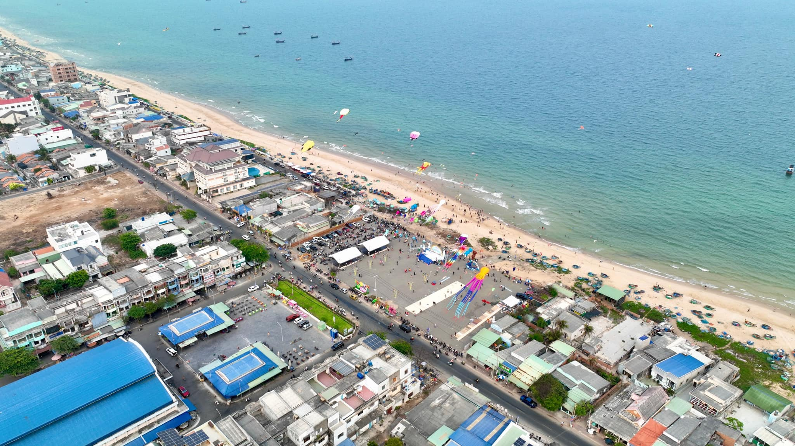

MỘT TRANG WEB TUYỆT VỜI GIÚP BẠN TÌM HIỂU VỀ VĂN HÓA, LỊCH SỬ, ĐỊA LÍ VÀ CÁC ĐỊA ĐIỂM DU LỊCH ĐÁNG QUAN TÂM CỦA BÀ RỊA VŨNG TÀU

Bà Rịa – Vũng Tàu (BRVT) là một tỉnh ven biển thuộc vùng Đông Nam Bộ, Việt Nam. Đây là trung tâm kinh tế, tài chính, văn hóa, du lịch, giao thông - vận tải và giáo dục của miền nam nước ta.
Với hệ sinh thái biển độc đáo, tài nguyên thiên nhiên phong phú và cơ sở vật chất được đầu tư kỹ lưỡng, BRVT còn được mệnh danh là “thủ phủ du lịch” ở khu vực miền Nam, Việt Nam.
HUYỆN ĐẤT ĐỎ
Huyện Đất Đỏ là một huyện ven biển, thuộc tỉnh Bà Rịa-Vũng Tàu, nằm ở vùng Đông Nam Bộ của Việt Nam. Huyện được thành lập vào ngày 15 tháng 11 năm 2007, có 8 đơn vị hành chính cơ sở: 6 xã và 2 thị trấn.
- Diện tích: 189,58 km²
- Dân số: 76,659 người (năm 2018)
- Vị trí địa lý: nằm ở khu vực ven biển, chủ yếu là đồng bằng và đồi núi. Đất Đỏ có hệ thống sông ngòi, bưng bàu phong phú, đóng vai trò quan trọng trong việc phục vụ kháng chiến và phát triển kinh tế, văn hóa địa phương.

TP.VŨNG TÀU
Vũng Tàu là thành phố biển, thuộc tỉnh Bà Rịa - Vũng Tàu, có 17 đơn vị hành chính cơ sở: 16 phường và 1 xã. Đây là trung tâm kinh tế, tài chính, văn hóa, giáo dục của tỉnh và là một trong những trung tâm kinh tế của vùng Đông Nam Bộ. Vũng Tàu còn là khu hậu cần của ngành công nghiệp dầu khí Việt Nam.
- Diện tích: 140,1 km²
- Dân số: 527.025 người (năm 2018)
- Vị trí địa lý: nằm ở phía Nam tỉnh Bà Rịa - Vũng Tàu, có 4 mặt giáp biển và sông rạch, cách trung tâm TP.HCM đi theo hướng cao tốc Long Thành - TP. Hồ Chính Minh là 100km và cách TP. Biên Hoà 95km.

TP.BÀ RỊA
Thành phố Bà Rịa là trung tâm hành chính - chính trị, kinh tế, văn hóa – xã hội của Tỉnh Bà Rịa - Vũng Tàu, là hạt nhân thúc đẩy quá trình đô thị hoá và là đầu mối giao thông đường bộ quan trọng của tỉnh. Có 11 đơn vị hành chính cơ sở: 8 phường và 3 xã.
- Diện tích: 91.04 km²
- Dân số: 114. 116 người (năm 2021)
- Vị trí địa lý: TP. Bà Rịa nằm cách thành phố Hồ Chí Minh 90 km về phía Đông Bắc. Bà Rịa là đầu mối giao thông đường bộ quan trọng của tỉnh, có vai trò kết nối hệ thống đô thị dọc các trục Quốc lộ 51, Quốc lộ 55, Quốc lộ 56, Tỉnh lộ 44A, Tỉnh lộ 52.

THỊ XÃ PHÚ MỸ
Phú Mỹ là thị xã thuộc tỉnh Bà Rìa - Vũng Tàu, có 10 đơn vị hành chính cơ sở: 5 phường và 5 xã. Đây là nơi tập trung nhiều khu công nghiệp nhất của tỉnh, thúc đẩy nền kinh tế nước nhà với 4 trụ cột chính: Công nghiệp, Cảng biển - dịch vụ hậu cần cảng và logistic, Du lịch, Nông nghiệp ứng dụng công nghệ cao.
- Diện tích: 333,84 km²
- Dân số: 221.030 người (năm 2019)
- Vị trí địa lý: nằm ở khu vực ven biển, chủ yếu là đồng bằng và đồi núi. Đất Đỏ có hệ thống sông ngòi, bưng bàu phong phú, đóng vai trò quan trọng trong việc phục vụ kháng chiến và phát triển kinh tế, văn hóa địa phương.

HUYỆN LONG ĐIỀN
Long Điền là một huyện thuộc tỉnh Bà Rịa–Vũng Tàu, có 16 đơn vị hành chính cơ sở: 5 xã và 2 thị trấn.
- Diện tích: 77,7 km²
- Dân số: 134.328 người (năm 2016)
- Vị trí địa lý: Huyện Long Điền là huyện ven biển, phía Đông giáp Đất Đỏ, phía Tây giáp TP. Vũng Tàu và TP. Bà Rịa, phía Nam giáp biển Đông, phía Bắc giáp huyện Châu Đức -> hội tụ đủ tiềm năng để phát triển thuỷ sản và du lịch.

HUYỆN CHÂU ĐỨC
Châu Đức là huyện nằm ở phía Tây Bắc của tỉnh Bà Rìa - Vũng Tàu, có 16 đơn vị hành chính cơ sở: 15 xã và 1 thị trấn.
- Diện tích: 422.2 km²
- Dân số: 157.816 người
- Khí hậu: nằm trong vùng khí hậu nhiệt đới gió mùa cận xích đạo, có nền nhiệt độ cao quanh năm, ít gió bão, không có mùa đông lạnh -> thuận lợi phát triển kinh tế nói chung và đặc biệt là sản xuất nông nghiệp.

Côn Đảo
Côn Đảo là một quần đảo ở ngoài khơi bờ biển Nam Bộ và là đơn vị hành chính cấp huyện trực thuộc tỉnh Bà Rịa – Vũng Tàu.
- Diện tích: 76 km², gồm 16 hòn đảo lớn nhỏ khác nhau.
- Dân số: 8.360 người (năm 2014)
- Vị trí địa lý: cách thành phố Vũng Tàu khoảng 185km, cách thành phố Hồ Chí Minh khoảng 230km và cách cửa sông Hậu 83km. Côn Đảo cách đường hàng hải quốc tế 60 km. Vị trí của Côn Đảo là một nút giao thông trên biển của vùng biển phía Nam của nước ta.

HUYỆN XUYÊN MỘC
Xuyên Mộc là một huyện ven biển của tỉnh Bà Rịa - Vũng Tàu, gồm 13 đơn vị hành chính cơ sở: 12 xã và 1 thị trấn. Khu vực này cũng có nhiều danh lam thắng cảnh đẹp và yên bình, nổi bật là Hồ Tràm và Hồ Cốc.
- Diện tích: 642,18km²
- Dân số: 200.356 người (năm 2022)
- Vị trí địa lý: nằm ở phía Đông Bắc của tỉnh BRVT, là huyện có diện tích lớn nhất tỉnh.

BÀ RỊA - VŨNG TÀU CÓ GÌ?
Dưới đây là một số bài viết đánh giá giúp bạn có trải nghiệm du lịch đáng nhớ nhất.
SỰ KIỆN ĐANG DIỄN RA
Những sự kiện sẽ diễn ra sắp tới tại Bà Rịa vũng Tàu
DEC
JAN
FEB
MAR
MAY